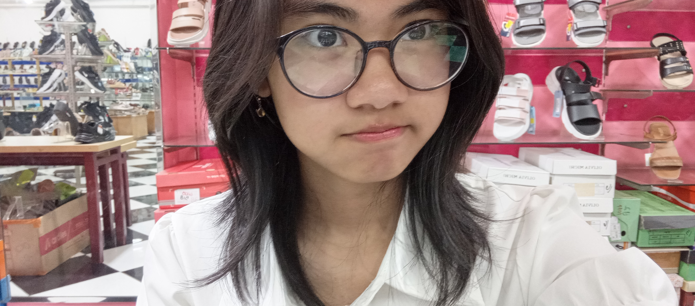
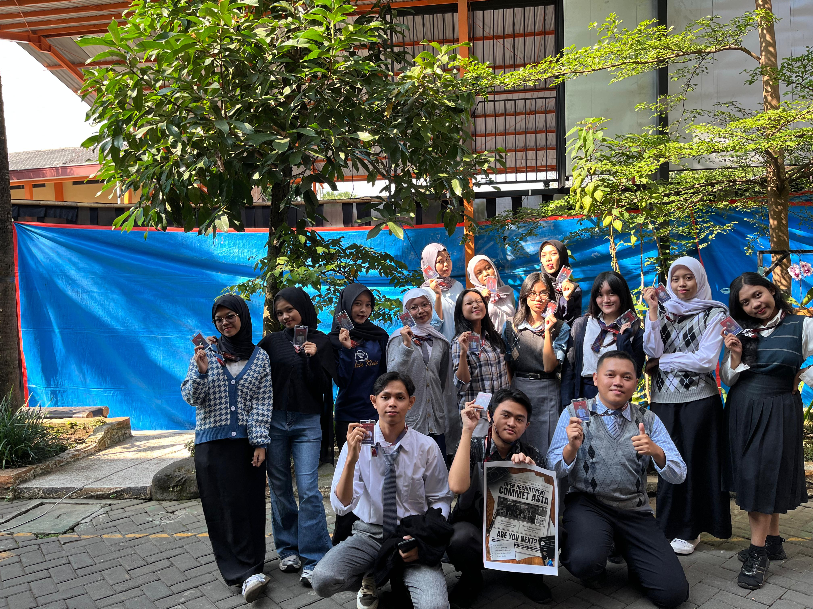
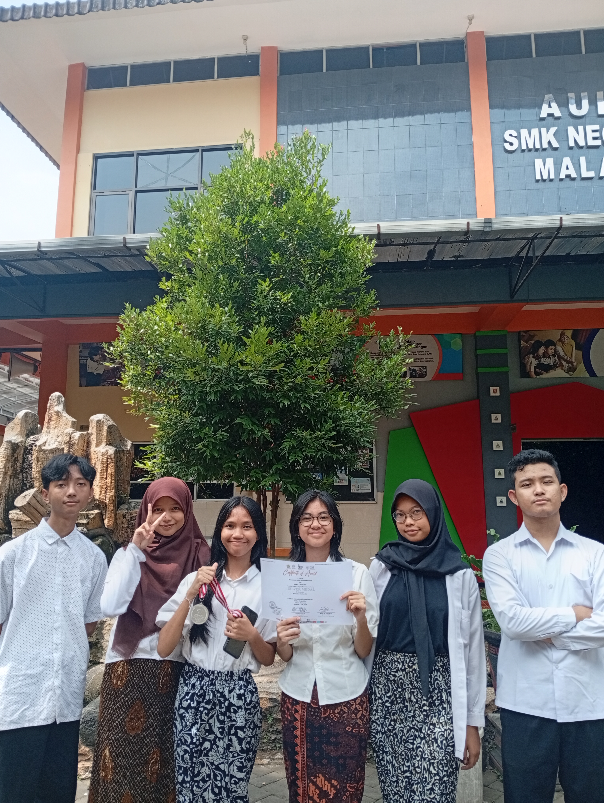

Hi! I’m Izabel Quincilla Fatikha—but just call me Abel or Abeng. I’m 16 y/o (’09 baby 😤) and a proud student of XI RPL A at SMKN 8 Malang. I’m super into creating cool stuff, from digital designs to random creative projects, because duh… I’m cool 😎. My MBTI is INFJ, aka soft introvert with a mysterious edge™. I speak Indonesian daily but sprinkle English when I feel ✨extra✨. Outside school, I’m obsessed with outfits and fashion, always hunting for style inspo and dreaming of the perfect wardrobe. That’s basically me—creative, curious, and a little bit chaotic!
Preview



Some Funfact Abt Me
I’ve always loved expressing myself through visuals and stories. Creativity, for me, isn’t just a hobby—it’s the way I connect with myself and the world around me. Ever since I was younger, I’ve found joy in transforming simple ideas into something tangible, whether it’s through a digital poster, a piece of graphic design, or a heartfelt short story. Graphic design has become my main creative outlet. I enjoy combining colors, typography, and layouts to communicate an idea or emotion without using words. A good design doesn’t just look pretty—it tells a story, captures attention, and leaves an impression. Designing posters and visual materials for school projects, personal ideas, or my small editing and design service has taught me the importance of balance and clarity. It’s about finding the perfect way to turn a concept into a visual language that resonates with people. Writing is another way I express my creativity. I love crafting fiction and building characters who feel real, exploring their emotions and struggles. I often write in English because it gives me more flexibility in storytelling. My writing and design work sometimes overlap—an idea for a story might inspire a poster, and a visual concept might spark a new piece of writing. This cycle keeps my creativity alive and constantly evolving.
I really enjoy watching dramas—seriously, I can watch almost any genre. Romance, thriller, mystery, comedy, slice of life… you name it, I’ll watch it. There’s just something about getting pulled into another world for a few hours that feels so comforting. Lately, I’ve been wanting to start a Japanese dorama, but I just don’t have the time. Life’s busy, and my watchlist keeps growing while I keep telling myself, “I’ll start it soon.” Even when I can’t watch as much as I want, dramas are still one of my biggest sources of joy. They’re not just entertainment for me—I love paying attention to how stories are told through visuals, music, and character development. Sometimes a single scene or OST will stick in my head for days, making me feel like I’m still part of that story. I also spend a lot of time talking about K-Pop and T-Pop. In K-Pop, I’m keeping up with TWS, SEVENTEEN, and BONEDO, each with their own charm and energy. And in T-Pop, I’ve recently gotten into LYKN, and they’ve completely caught my attention. Keeping up with comebacks, new songs, and live performances is so exciting—it feels like being part of a community that shares the same happiness.
I’m familiar with various creative and digital tools that help me bring my ideas to life. When it comes to design and editing, I usually use Canva—I’m not an expert or anything, but I really enjoy playing around with layouts, colors, and fonts to create something that feels like “me.” Canva is simple, but that’s what I like about it. It lets me turn my ideas into posters, graphics, and small visual projects without feeling overwhelming. Sometimes I make visuals just for fun, like digital posters inspired by music, shows I like, or random concepts that pop into my head. Other times, I create designs for friends or small requests through my little editing and design service. Even though I’m still learning, each project teaches me something new—whether it’s about composition, color balance, or just how to communicate a feeling through visuals.
And, lastly, I still figuring things out, so my dream job? Kinda blurry right now. I need time—I'm still in that phase where I wanna try everything and see what actually fits me. So yeah… let’s just see where life takes me.
More (most interesting one)
I do edits for fun—but also seriously. Like, the “I won’t sleep until this looks perfect” kind of serious 😭✌️ You can ask me for edits anytime. Psst, go peek at Seracilry 👀 You might find something you love! it’s worth the scroll. I actually started Seracilry with a friend (enji bubub)—we both love creating, editing, and sharing cool visuals together. It’s our little passion project, and we’re always excited to make something new.
Click for Sera